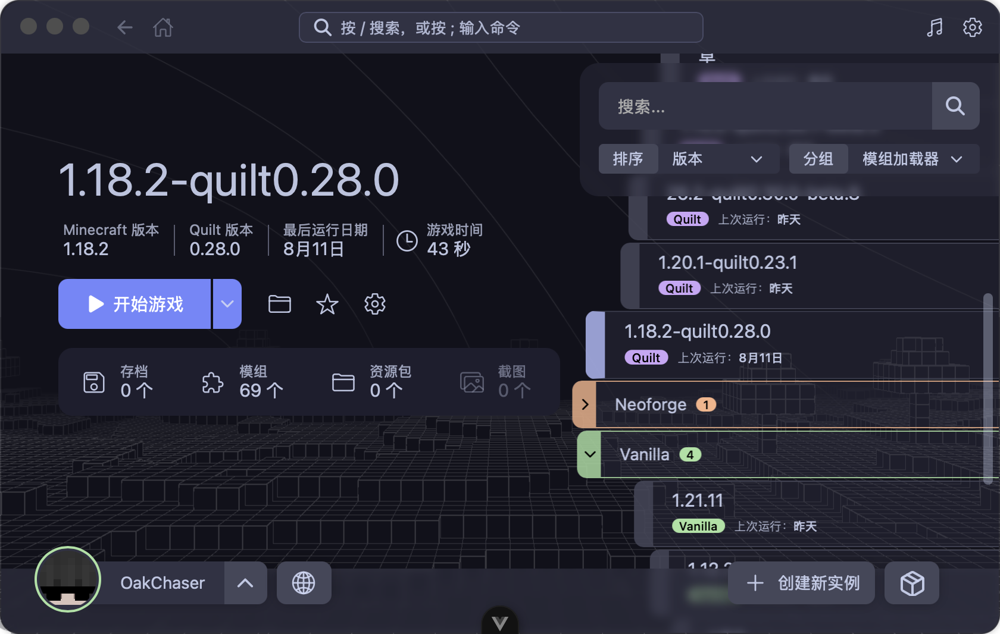
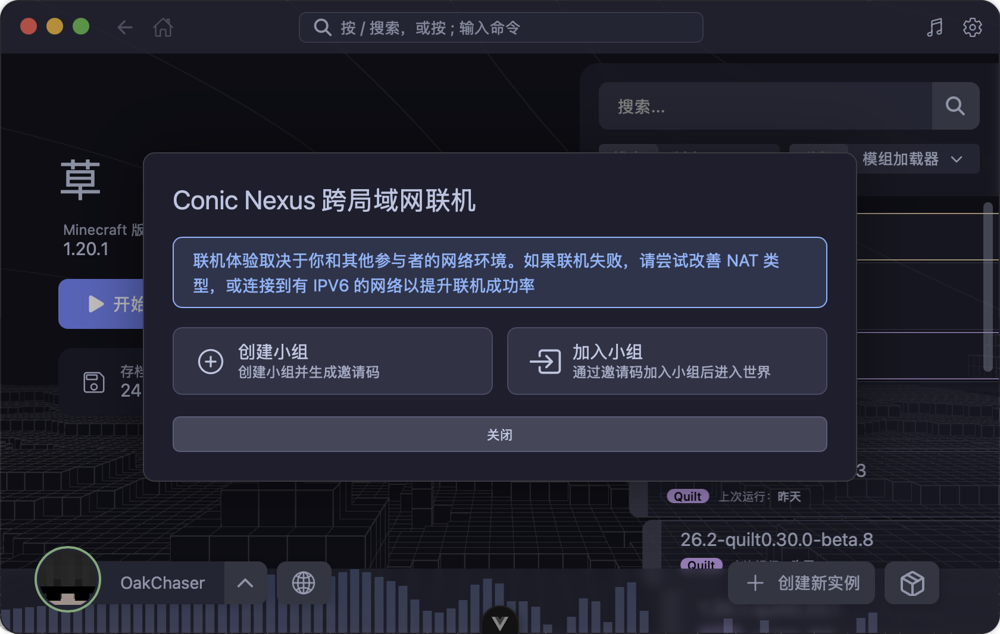
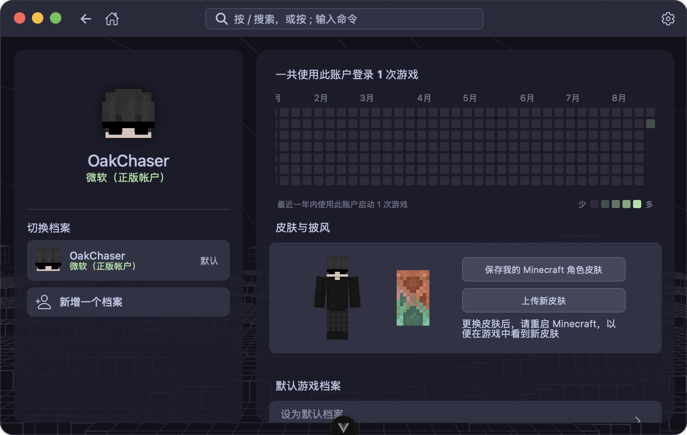

License
GPL-3.0 with additional Section 7 terms — free to use, and redistribution keeps the ConicMC attribution and copyright.
Read the license →Conic Launcher is a small, fast, nimble, cross-platform launcher. From installing instances and loaders to resolving mods and inviting friends — the whole pipeline is one app, engineered to stay out of the way.

01/05
From creating instances and installing loaders, to searching for mods and inviting friends to play together, to launching the game and tracking playtime — the entire workflow can be completed in a single app.
02/05 — Demos
Every clip is recorded from the real launcher — one small moment per feature, on loop.
01 — Multi-instance management
Browse instances grouped by mod loader, with sorting, search, and favorites. Each instance keeps its own settings, custom background, playtime tracking, and last-played timestamp at a glance.
02 — All major loaders
Choose your Minecraft version and loader version — the launcher handles the rest. Vanilla, Forge, NeoForge, Fabric, and Quilt are all supported, with real-time installation progress.
03 — Mod & resource pack marketplace
Built-in Modrinth and CurseForge search: browse project details and dependencies, read translated summaries, and install mods or resource packs into your instances with one click. Manage locally installed mods directly too.

04 — Conic Nexus cross-LAN multiplayer
Create a group, share the invite code with friends, and join the same world together. The launcher detects your network environment (NAT type) and provides optimization suggestions.

05 — Multiple login methods
Supports Microsoft account login (device code flow), offline login, and any Authlib-Injector / Yggdrasil external authentication server. Accounts feature 3D skin preview, cape display, and skin uploading.
06 — Hassle-free launch experience
Java is auto-scanned on your system (or downloaded for you), memory is auto-allocated with a 32-bit cap, and the whole process is visualized: downloading game files, installing loaders, resolving dependencies, starting the game.
07 — Saves & game data
Browse save world maps, manage data packs and resource packs, and view game screenshots — all within the launcher.
08 — Multi-theme support
Mocha, Macchiato, Frappé, and Latte — plus high-contrast variants — with automatic light/dark switching that follows your system. Custom launcher backgrounds are supported.
09 — Music player
Play your local music without leaving the launcher — playback controls are paired with a live spectrum visualization.
And more
/) & command palette (;)03/05 — Telemetry
License, releases, and the ways in.
GPL-3.0 with additional Section 7 terms — free to use, and redistribution keeps the ConicMC attribution and copyright.
Read the license →Installers per platform from GitHub Releases. In-app auto-updates mean no manual upgrades after install.
Download a release →Issues and pull requests against the dev branch. Run the checks before submitting — every change is gated on CI.
04/05 — Download
Pick your platform. Everything below is packaged and signed from GitHub Releases.
05/05 — Params
A small, fast, and nimble Minecraft launcher. Multi-instance management · mod & resource pack marketplace · cross-LAN multiplayer · multi-theme support.